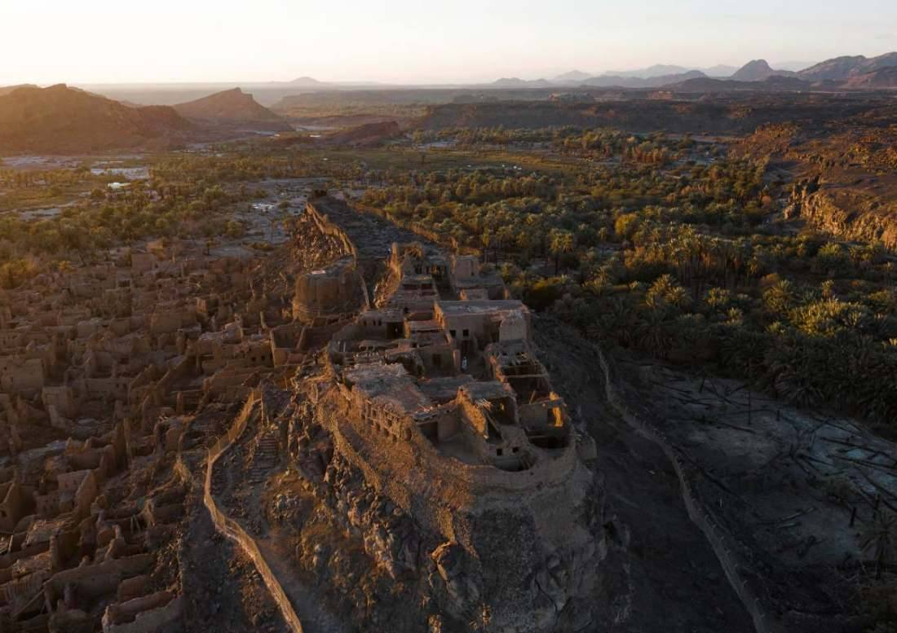
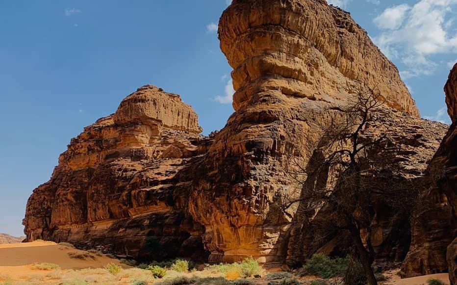

About PUD
Planning & Urban Development since 1966.
PUD (Planning & Urban Development Consultants) is an urban planning and architecture practice. Prof. Dr. Abdallah Abdel Aziz Attia founded it in Cairo in 1966.

Khaybar Heritage Area master plan · AlUla →Our purpose
We plan cities, regions and destinations so that they work for the people who live in them, respect the land and keep what makes each place worth visiting.
Who we are
PUD plans cities, regions and destinations, designs buildings and landscapes, and advises on delivery. We work from Cairo, Riyadh and Dubai, and bring in specialists from partner firms for each project.
Our work runs from Egypt's North West Coast and Marina El Alamein to the holy sites of Makkah, AlUla and the Pyramids Plateau, for ministries, royal commissions, developers and universities.
Leadership, harmony and clarity describe how we work with clients. Integrity, sustainability, innovation and excellence are the standards we hold ourselves to.
Mission
To plan and design places that fit their context, from the regional plan to the building, and to train the planners who come next.
Vision
To be the planning partner that governments and developers in Egypt, Saudi Arabia and the Gulf call first for cities, destinations and heritage areas.
Core values
- 01IntegrityOur ethical approach underpins all our relationships and decisions.
- 02SustainabilityEnvironmental, social and cultural harmony in all projects.
- 03InnovationNew tools and methods, tested on real projects.
- 04ExcellenceThe highest standards of quality and safety.
Expertise
From the regional plan to the building.
Six services, plus a network of specialists we bring in for each project.
Approach
How we work.
Each project starts with the site, its history and the people who will use it. Then we choose the team and the method that fit it.
- 01Insight-driven planningStakeholder engagement and contextual analysis.
- 02Scenario-based thinkingOptions tested against changes in demand, cost and climate.
- 03Collaborative co-creationClients, communities and experts shape the vision together.
- 04Context-led designDesign that keeps the character of the place.
- 05Agile project structuringProject-specific teams and phasing.
- 06Sustainability from the startLand, water, energy and heritage considered from the first sketch.
Sustainability
Designing with purpose. Building for tomorrow.
We test every plan against the same questions: does it use land, water and energy sensibly, does it include the people who live there, and does it keep what makes the place worth visiting? Sustainable tourism planning on the Red Sea.
- 01Environmental responsibilityMinimising our ecological impact through responsible land use, energy-efficient design and environmentally sound planning strategies.
- 02Social inclusionCreating accessible, inclusive spaces that serve diverse communities and foster a sense of belonging for all.
- 03Cultural heritage preservationHonouring the historical and cultural identity of each place in every project, ensuring continuity and authenticity.
- 04Green building standardsInternational good practice and construction methods that cut energy and water use over the life of a building.

Sharaan Nature Reserve · AlUlaAwards
More than 20 first and second prizes.
More than 20 first and second prizes in design and planning competitions in Egypt, Kuwait and Saudi Arabia, and the State Encouragement Prize in Architecture (1990) for Marina El Alamein. First prizes won by PUD in competitions include the Nasser Memorial Civic Centre and the planning of Luxor City and its Region (both joint entries), Al-Ashish Urbanized Communities in Kuwait and Tut Amun Village Hotel.
Frequently asked questions
What is PUD Consultants?
PUD (Planning & Urban Development) Consultants is an urban planning and architecture practice founded in Cairo in 1966 by Prof. Dr. Abdallah Abdel Aziz Attia. It plans cities, tourism destinations and heritage areas, and designs buildings and landscapes, in Egypt, Saudi Arabia, the UAE and beyond.
Who leads PUD Consultants today?
PUD is led by Prof. Dr. Amr Attia, CEO and Principal. He is Professor of Urban Planning at Ain Shams University, an Eisenhower Fellow (2007), and was Principal Director at AECOM Arabia and Vice President at WATG.
What services does PUD offer?
PUD offers urban & regional planning, urban design & master planning, architecture & interior design, environmentally sustainable development, cultural heritage planning and development consultancy & strategic advisory, and assembles bespoke advisory groups of international experts for each project.
Where does PUD work?
PUD's record documents 186 projects in 11 countries: Egypt, Saudi Arabia, Kuwait, Syria, Iraq, United Arab Emirates, Cameroon, Qatar, Iran, Germany and Gambia. Its offices are in Cairo (Egypt), Riyadh (Saudi Arabia) and Dubai (UAE).
What are some of PUD's notable projects?
Highlights include the Pyramids Plateau destination master plan (with WATG), Al Mashaaer Al Mugaddassah in Makkah, Alamein Riviera, Somou Boulevard, Cairo Media City, strategic advisory for the New Administrative Capital, the Khaybar Heritage Area development brief and the AlUla Strategic Framework Plan, and Jazan Economic City.
How does PUD approach sustainability?
Sustainability is part of how PUD plans, through environmental responsibility, social inclusion, cultural heritage preservation and green building standards. PUD's work contributes most directly to UN Sustainable Development Goals 8, 9, 11 and 17.
Does PUD work with international firms?
Yes. PUD regularly collaborates with leading global firms including WATG, AECOM, SOM, BuroHappold, HOK, Hill International and Giugiaro, combining international expertise with deep local knowledge, alongside 100+ clients and 90+ collaborations over six decades.
How can I contact PUD Consultants?
Write to info@pudconsultants.com or use the form on the contact page. Or call Cairo on +20 2 2414 7537 or +20 100 198 1111, Riyadh on +966 540 39 8178 or Dubai on +971 509 29 8178.